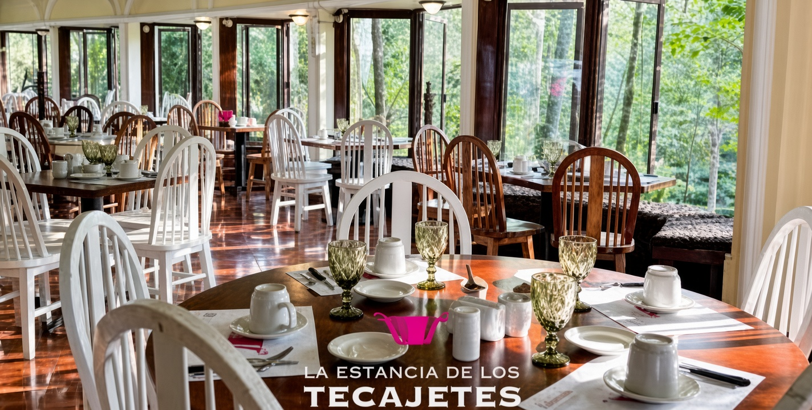

📸 ¡Únete a nuestra comunidad!
Comparte tus mejores fotos de Xalapa, descubre nuevos rincones y envíanos tus reseñas y experiencias de los lugares que visites a través de nuestro Instagram.
Envíanos tu reseña por Instagram ↗Descubre nuestra comunidad
Explora las experiencias y recomendaciones de los lugares más interesantes de Xalapa.
Lugares destacados
Lulú Café
★ 4.6 · Cafetería
Ver reseñas →
La Estancia de los Tecajetes
★ 4.4 · Restaurante
Ver reseñas →